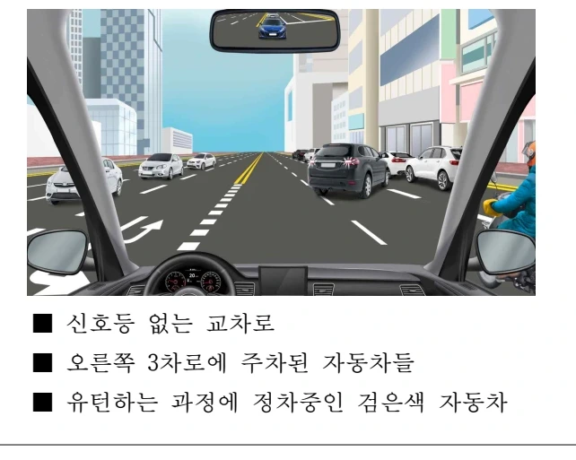

811. Уулзварт орж чигээрээ явах гэж байна. Хамгийн аюулгүй жолоодох арга болох 2-ыг сонгоно уу.

- ①Хар өнгийн автомашин ухарч болзошгүй тул хурдаа сааруулан бэлтгэлтэй байна.
- ②Хоёр дугуйт тээврийн хэрэгсэл хар өнгийн суудлын автомашины зүүн талаар эгнээ сольж болзошгүй тул анхаарна.
- ③Эсрэг чиглэлийн сул байгаа чигээрээ явах эгнээг ашиглан чигээрээ явсны дараа анхны эгнээндээ буцаж орно.
- ④Зогссон хар өнгийн автомашины хажуугаар хурдаа нэмэгдүүлэн чигээрээ өнгөрнө.
- ⑤Хоёр дугуйт тээврийн хэрэгсэл миний урд эгнээ сольж орох боломжгүй байхаар хурдаа нэмэгдүүлэн өнгөрнө.
Хариулт харах
Зөв хариулт
① Хар өнгийн автомашин ухарч болзошгүй тул хурдаа сааруулан бэлтгэлтэй байна.
② Хоёр дугуйт тээврийн хэрэгсэл хар өнгийн суудлын автомашины зүүн талаар эгнээ сольж болзошгүй тул анхаарна.
Үндэслэл
Үзүүлсэн нөхцөл байдалд хар өнгийн суудлын автомашин нь Замын хөдөлгөөний тухай хуулийн 18-р зүйлд эргэлт хийхийг хориглосон заалтыг зөрчиж байна. Хар суудлын машины ухрах гэрэл асаалттай байгаа тул эргэх радиусыг хамгаалахын тулд ухрах үйлдлийг урьдчилан таамаглах боломжтой. Иймд жолооч урвуу гэрэл асаалттай машиныг анзаарахдаа болгоомжтой байж, хурдаа хасч зогсох хэрэгтэй. Баруун эгнээгээр (хоёр дахь эгнээ) явж байгаа хоёр дугуйтай тээврийн хэрэгслийн жолооч урд талын хөдөлгөөнд саад учруулсан гэж үзвэл зүүн тийш чиглэлээ өөрчлөх магадлалтай. Энэ тохиолдолд баруун талд байгаа хоёр дугуйтай тээврийн хэрэгсэлд онцгой анхаарал хандуулах хэрэгтэй.
Үндэслэлийн текст нь машин орчуулга.